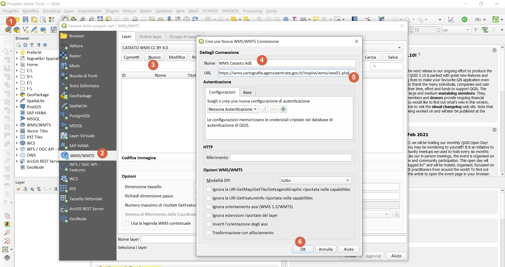

Decorazione Etichetta Titolo↵
Creare un nuovo progetto QGIS e aggiungere Decorazione Titolo
Espressione utilizzata↵
espressione utilizzata: (Menu: Visualizza | Decorazioni | Etichetta Titolo ...)
WMS Catasto Agenzia delle Entrate - CC BY 4.0 - [% @map_crs ||': '|| @map_crs_description %]

Servizio WMS↵
Come aggiungere il Servizio WMS a QGIS↵
- URL:
https://wms.cartografia.agenziaentrate.gov.it/inspire/wms/ows01.php - Gestione delle Sorgentidati | WMS/WMTS | Nuovo :

Quali dati espone il servizio WMS↵
- codice Belfiore;
- foglio;
- particella;
- sezione;
- allegato;
- sviluppo
SR disponibili per il WMS↵
Il servizio rende consultabili i dati nel Sistema di riferimento geodetico nazionale (Decreto 10 novembre 2011) costituito dalla realizzazione ETRF2000 - all'epoca 2008.0 - del Sistema di riferimento geodetico europeo ETRS89, identificativo EPSG3:6706.
Ai soli fini di una migliore fruibilità del servizio in ambito INSPIRE, sono disponibili i Sistemi di riferimento relativi alla realizzazione ETRF89 (codici EPSG 4258, 25832, 25833, 25834, 3044, 3045, 3046).
- Capabitilis : https://wms.cartografia.agenziaentrate.gov.it/inspire/wms/ows01.php?SERVICE=WMS&VERSION=1.3.0&REQUEST=GetCapabilities
- copiate il link di sopra e incollatelo in un browser, poi cercate EPSG, troverete una lista di EPSG utilizzabili.
- Codici Comuni : https://www1.agenziaentrate.gov.it/servizi/codici/ricerca/VisualizzaTabella.php?ArcName=COM-ICI
| map_crs | map_crs_description | Area of fuse | Unit |
|---|---|---|---|
| EPSG:6706 | RDN2008 | Italy - onshore and offshore | degree |
| EPSG:4258 | ETRS89 | Europe - onshore and offshore | degree |
| EPSG:3044 | ETRS89 / UTM zone 32N (N-E) | Europe between 06°E and 12°E | metre |
| EPSG:3045 | ETRS89 / UTM zone 33N (N-E) | Europe between 12°E and 18°E | metre |
| EPSG:3046 | ETRS89 / UTM zone 34N (N-E) | Europe between 18°E and 24°E | metre |
| EPSG:25832 | ETRS89 / UTM zone 32N | Europe between 06°E and 12°E | metre |
| EPSG:25833 | ETRS89 / UTM zone 33N | Europe between 12°E and 18°E | metre |
| EPSG:25834 | ETRS89 / UTM zone 34N | Europe between 18°E and 24°E | metre |
Layer disponibili nel WMS↵
| nome | Titolo | Scala visualizzazione | GetFeatureInfo |
|---|---|---|---|
| province | Province - Uffici | 1:50.000 | n.d. |
| CP.CadastralZoning | Mappe | 1:200.000 | Campi previsti dalla Direttiva INSPIRE |
| acque | Acque | 1:40.000 | n.d. |
| strade | Strade | 1:40.000 | n.d. |
| CP.CadastralParcel | Particelle | 1:5.000 | Campi previsti dalla Direttiva INSPIRE |
| fabbricati | Fabbricati | 1:5.000 | n.d. |
| vestizione | Vestizione | 1:2.000 | n.d. |
| copyright | Copyright© |
Creare un nuovo GeoPackage↵
- Per chi volesse avere tutto pronto, scarica geopackage con progetto (posizionato in Sicilia)
Per creare velocemente un nuovo GeoPackage, digitare Ctrl+Shift+N, altrimenti dal Menu | Crea Vettore | Nuovo Layer GeoPackage

- definire il percorso e nome del GeoPackage;
- definire il nome della tabella (
catasto); - definire il Tipo di geometria (in questo esempio
Punto); - selezionare EPSG del Progetto (che deve essere EPSG del WMS Catasto);
- pigiare su
OK
NB: il GeoPackage creerà automaticamente il campo fid, tutti gli altri campi che ci serviranno saranno campi virtuali (vedi sotto)
Impostazioni Progetto↵
- definire l'area in cui lavorare (es: un comune);
- in funzione dell'area, definire EPSG del WMS (proiettato e non geografico);
- installare la funzione personalizzata;
- caricare il geopackage appena creato;
- aggiungere il layer WMS Catasto (vedi punto 2) e selezionare i layer:
- Particelle;
- vestizione;
- copyright
- occhio alla scala di visualizzazione del layer;
Espressione personalizzata↵
Questa espressione personalizzata permette di estrarre i dati esposti dal WMS Catasto
# -*- coding: utf-8 -*-
"""
/***************************************************************************
WMS Catasto Agenzia delle Entrate CC BY 4.0
-------------------
copyright : (C) 2020 by Giulio Fattori
email : xxxxxxx.xxxxxx@xxx.it
***************************************************************************/
"""
from qgis.core import *
from qgis.gui import *
import requests
@qgsfunction(args='auto', group='Custom')
def get_parcel_info2(xx, yy, EPSG, feature, parent):
"""
<h1>WMS Catasto Agenzia delle Entrate CC BY 4.0:</h1><br>
La funzione, tramite una richiesta GetFeatureInfo, restituisce le informazioni utili sulla particella che ricade sotto il pixel di mio interesse:
<h2>Esempio:</h2>
<ul>
<li>get_parcel_info2(355461.5,4222490.7,'EPSG:3045') -> 'IT.AGE.PLA.G273_0033A0.673'</li>
<li>get_parcel_info2("fieldX", "fieldY",'EPSG:3045') -> 'IT.AGE.PLA.G273_0033A0.673'</li>
<li>get_parcel_info2("fieldX", "fieldY",@project_crs) -> 'IT.AGE.PLA.G273_0033A0.673'</li>
</ul>
<h2>NB: le coordinate X e Y devono essere espresse nel EPSG utilizzato (gli EPSG disponibili sono:25832/3/4,3044/5/6)</h2>
"""
req = "https://wms.cartografia.agenziaentrate.gov.it/inspire/wms/ows01.php?REQUEST=GetFeatureInfo&SERVICE=WMS&SRS="+EPSG+"&STYLES=&VERSION=1.1&FORMAT=image/png&BBOX="+str(xx-1)+","+str(yy-1)+","+str(xx+1)+","+str(yy+1)+"&HEIGHT=9&WIDTH=9&LAYERS=CP.CadastralParcel&QUERY_LAYERS=CP.CadastralParcel&INFO_FORMAT=text/html&X=5&Y=5"
r = requests.get(req, auth=('user', 'pass'))
a = r.text.partition("InspireId localId</th><td>")[2]
b = a.partition("</td>")[0]
return b
file da salvare nella cartella del profilo corrente: C:\Users\nomeUtente\AppData\Roaming\QGIS\QGIS3\profiles\default\python\expressions
raggiungibile da : Menu | Impostazioni | Profilo utente | Apri la cartella del profilo attivo

la funzione personalizzata nel Gruppo Custom del field calc:

campi virtuali↵
sotto le espressioni utilizzate nei campi virtuali (i campi virtuali permettono di creare un layer con i campi popolati da espressioni)
Creare un vettore puntuale, per esempio in un GeoPackage e definire solo il campo fid, gli altri campi li definiamo come campi virtuali, ecco le definizioni:
| nome campo | tipo campo | espressione | descrizione |
|---|---|---|---|
| fid | automatico | - | generato dal GeoPackage |
| x | virtuale | $x |
coordinata x del punto |
| y | virtuale | $y |
coordinata y del punto |
| catasto | virtuale | get_parcel_info2("x","y") |
funzione personalizzata |
| codice | virtuale | regexp_replace("catasto",'^(.+)\\.(.+)\\.(.+)\\.(.+)_(.+)\\.(.+)$','\\4') |
estrazione codice Belfiore |
| foglio | virtuale | regexp_replace("catasto",'^(.+)\\.(.+)\\.(.+)\\.(.+)_(.+)\\.(.+)$','\\5') |
nro foglio |
| particella | virtuale | regexp_replace("catasto",'^(.+)\\.(.+)\\.(.+)\\.(.+)_(.+)\\.(.+)$','\\6') |
nro particella |
casi possibili↵
vedi: Note sulla codifica dell’output della query al WMS dell’Agenzia delle Entrate presenti in questo ottimo blog post di Andrea Borruso
IT.AGE.PLA.G273_011800.485caso senza sezioneIT.AGE.PLA.B354A0018V0.2261caso con sezione
Alcuni comuni presentano delle sezioni e quindi la stringa estratta da get_parcel_info2() puo' variare, per tenere conto di questi casi occorre utilizzare le seguenti espressioni:
-
codice :
/*campo codice comune 4 caratteri*/ substr( regexp_replace( "catasto" ,'^(.+)\\.(.+)\\.(.+)\\.(.+)\\.(.+)$', '\\4'),1,4) -
sezione:
/*campo sezione 1 carattere*/ substr( regexp_replace( "catasto" ,'^(.+)\\.(.+)\\.(.+)\\.(.+)\\.(.+)$', '\\4'),5,1) -
foglio :
/*campo foglio 4 caratteri*/ substr( regexp_replace( "catasto" ,'^(.+)\\.(.+)\\.(.+)\\.(.+)\\.(.+)$', '\\4'),6,4) -
allegato:
/*campo allegato 1 carattere*/ substr( regexp_replace( "catasto" ,'^(.+)\\.(.+)\\.(.+)\\.(.+)\\.(.+)$', '\\4'),10,1) -
sviluppo:
/*campo sviluppo 1 carattere*/ substr( regexp_replace( "catasto" ,'^(.+)\\.(.+)\\.(.+)\\.(.+)\\.(.+)$', '\\4'),11,1) -
particella :
/*campo particella variabile*/ regexp_replace( "catasto" ,'^(.+)\\.(.+)\\.(.+)\\.(.+)\\.(.+)$', '\\5')

Digitalizzazione particelle↵
Plugin GIMP Selection Feature↵

Osservazioni↵

- id_add: l’indice della funzionalità aggiunta;
- total_imgs: totale delle immagini inviate a GIMP;
- images: l’elenco delle immagini (nome e origine);
- user: il nome dell’utente della macchina;
- date_add: la data dell’elemento aggiunto;
- crs_map: CRS della mappa quando è stata inviata l’immagine;
- extent_map: l’estensione della mappa quando l’immagine è stata inviata;
- annotation: il testo digitato quando l’immagine è stata inviata;
- area_ha: L’ettaro della geometria (è un campo virtuale) con la seguente espressione da verificare sempre e eventualmente correggere:
- area(transform($geometry,'EPSG:4326','EPSG:3045'))/10000
- Gimp utilizzato 2.10.24;
- Il SR del livello “gimp_selection” è EPSG: 4326
Workflow↵
- Avviare QGIS e installare il Plugin GIMP Selection Feature;
- Avviare GIMP e verificare che ci siam un menu IBAMA;
- Avviare il servizio dal menu IBAMA;
- in QGIS caricare il WMS catasto AdE e posizionarsi in un'area;
- Avviare il plugin da Menu Raster;
- Comparirà la finestra del plugin agganciata sul lato destro dello schermo;
- nel riquadro
Visible Imagesci sarà l'elenco dei layer raster caricati nella TOC e attivi; - dopo aver centrato l'area da digitalizzare nella map canvas: pigiare il bottone
Send image; - dopo qualche secondo, l'immagine della map canvas apparirà in GIMP;
- usare lo Strumento seleziona fuzzy e cliccare dentro una particella;
- da QGIS, pigiare sul bottone
Get featureper acquisire area selezionata come poligono.
Per maggiori info: https://github.com/lmotta/gimpselectionfeature_plugin/wiki
Plugin Magic Wand↵

Workflow↵
- Impostare Precisione e Soglia colore e fare clic sulla mapcanvas dove si desidera creare un poligono;
- La modalità singola ti consente di creare UN poligono intorno a dove hai cliccato.
- Una maggiore precisione richiede più tempo.
- Per rendere il poligono in modo appropriato, è meglio regolare alta la Saturazione.
NB: il poligono che restituisce ha lo stesso EPSG del Progetto.
estrarre dati dai poligoni↵
nel caso di poligoni (che hanno un EPSG diversoda quello del WMS):
/*estrae il foglio e la particella catastale a partire da un poligono*/
/*con EPSG diverso da quello del WMS*/
with_variable('fp',
with_variable('geom',
transform($geometry,'EPSG:4326', @project_crs ),
get_parcel_info2(
x( point_on_surface( @geom)),
y( point_on_surface( @geom)), @project_crs)),
regexp_replace( @fp ,'^(.+)\\.(.+)\\.(.+)\\.(.+)_(.+)\\.(.+)$', '\\5/\\6')
)
/*estrae il foglio e la particella catastale a partire da un poligono*/
/*con EPSG uguale a quello del WMS*/
with_variable('fp',
get_parcel_info2(
x( point_on_surface($geometry)),
y( point_on_surface($geometry)),@project_crs),
regexp_replace(@fp ,'^(.+)\\.(.+)\\.(.+)\\.(.+)_(.+)\\.(.+)$', '\\5/\\6')
)
Cosa occorre↵
Software con caratteristiche minime per seguire con profitto il workshop
Software da installare↵
- QGIS 3.16 Hannover (o maggiore)
 ;
; - GIMP 2.10 (attualmente GIMP 2.10.24)
 ;
;
Plugin da installare↵
Caratteristiche utilizzate nel progetto↵
- servizio WMS;
- Geopackage;
- espressioni personalizzate e non;
- espressioni regolari;
- campi virtuali;
- Plugin;
- GIMP;
- Etichette con funzione custom.
- Decorazioni: Copyright, Immagine, Etichetta Titolo.
Riferimenti utili↵
- QGIS : https://qgis.org/it/site/
- Repo QGIS : https://github.com/qgis/QGIS/blob/master/README.md
- Plugin Gimp Selection Feature : https://plugins.qgis.org/plugins/gimpselectionfeature_plugin/
- Plugin Magic Wand : https://plugins.qgis.org/plugins/MagicWand-master/
- Nominatim Locator Filter : https://plugins.qgis.org/plugins/nominatim_locator_filter/
- Consultazione cartografia catastale - WMS : https://www.agenziaentrate.gov.it/portale/web/guest/schede/fabbricatiterreni/consultazione-cartografia-catastale/servizio-consultazione-cartografia
- GIMP : https://www.gimp.org/
- Font Trueno : https://www.wfonts.com/font/trueno
- Visual Style Guide : https://www.qgis.org/en/site/getinvolved/styleguide.html#trueno-fonts
- Visual Studio Code : https://code.visualstudio.com/
- onData : https://ondata.it/
- OpenDataSicilia : http://opendatasicilia.it/
- Blog Post di Andrea Borruso : https://medium.com/tantotanto/le-mappa-castali-diventano-finalmente-utilizzabili-821db2f84533